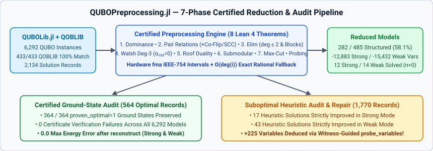
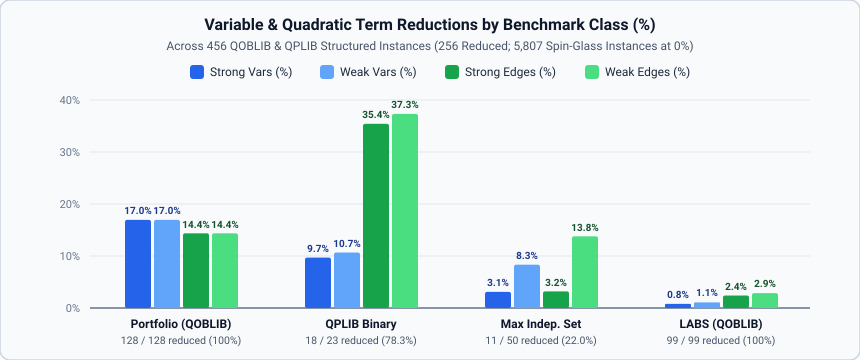

QUBOLib & QOBLIB Corpus Benchmarks
This page summarizes the full-corpus evaluation of QUBOPreprocessing.jl across all 6,263 benchmark instances and 2,254 solution records in QUBOLib.jl (v0.2.4-data+4) and QOBLIB (16a166ee67c24c112551c803aab5394743b815b5).

QUBOLib and QOBLIB overlap
QOBLIB contains 433 unconstrained QUBO .qs.xz models across four classes: Market Split (01-marketsplit, 156 instances), Low-Autocorrelation Binary Sequences (02-labs, 99 instances), Portfolio Optimization (06-portfolio, 128 instances), and Maximum Independent Set (07-independentset, 50 instances).
All 433 / 433 QOBLIB QUBO models match the qoblib collection in QUBOLib.jl with 100% exact identity across variable count $n$, linear terms, quadratic terms, objective offset, scale, domain (bool), and sense (min).
| Collection | Problem Class | Instances | $n$ Range | $m$ Range (Quad Terms) | Solutions in QUBOLib | Certified Optimal (proven_optimal=1) |
|---|---|---|---|---|---|---|
qoblib | Portfolio Optimization | 128 | 100 – 400 | 3,980 – 66,430 | 399 | 89 |
qoblib | LABS | 99 | 3 – 4,950 | 1 – 4,042,575 | 704 | 82 |
qoblib | Market Split | 156 | 20 – 90 | 190 – 4,005 | 511 | 44 |
qoblib | Maximum Independent Set | 50 | 17 – 4,000 | 39 – 579,329 | 704 | 104 |
qplib | Binary Quadratic (QBB) | 23 | 120 – 1,580 | 538 – 342,960 | 23 | 0 |
arXiv-1903-10928-3r3x | 3-Regular 3-XORSAT | 3,200 | 16 – 1,024 | 24 – 1,536 | 0 (+100 brute-forced) | 100 (exact ground state) |
arXiv-1903-10928-5r5x | 5-Regular 5-XORSAT | 307 | 24 – 36 | 60 – 90 | 0 | 0 |
arXiv-2103-08464-3r3x | 3-Regular 3-XORSAT | 2,300 | 16 – 912 | 24 – 1,368 | 0 (+100 brute-forced) | 100 (exact ground state) |
| Total | All 8 Groups | 6,263 | 3 – 4,950 | 1 – 4,042,575 | 2,341 (2,054 w/ bitstrings) | 519 (319 + 200 brute-forced) |
Certified ground-state verification (519 optimal records)
To verify that QUBOPreprocessing.jl fixes variables soundly, all 7 reduction passes were audited in both strong (persistency = :strong) and weak (persistency = :weak) modes against 519 certified optimal ground states (319 records with proven_optimal = 1 in QUBOLib.jl plus 200 exact $2^{16}$-state brute-force ground states on all $n=16$ arXiv-*-3r3x instances):

| Collection / Class | Certified Optimal Records | Strong Unary Checks | Strong Unary Disagreements | Pair Relation Checks | Relation Disagreements (Tie-Symmetry) | Unique-Argmin Elim Checks | Unique-Argmin Disagreements | Max $|E_{\text{orig}} - E_{\text{rec}}|$ (Strong) | Max $|E_{\text{orig}} - E_{\text{rec}}|$ (Weak) |
|---|---|---|---|---|---|---|---|---|---|
qoblib / Portfolio Optimization | 89 | 1,301 | 0 | 0 | 0 | 122 | 0 | 0.0 | 0.0 |
qoblib / LABS | 82 | 0 | 0 | 82 | 19 (degenerate tie) | 412 | 0 | 0.0 | 0.0 |
qoblib / Market Split | 44 | 0 | 0 | 0 | 0 | 0 | 0 | 0.0 | 0.0 |
qoblib / Maximum Independent Set | 104 | 15 | 0 | 0 | 0 | 3 | 0 | 0.0 | 0.0 |
arXiv-1903-10928-3r3x ($n=16$) | 100 | 0 | 0 | 0 | 0 | 0 | 0 | 0.0 | 0.0 |
arXiv-2103-08464-3r3x ($n=16$) | 100 | 0 | 0 | 0 | 0 | 0 | 0 | 0.0 | 0.0 |
| Total | 519 | 1,316 | 0 (0.00%) | 82 | 19 (all $\Delta E = 0$) | 537 | 0 (0.00%) | 0.0 | 0.0 |
Every strong unary persistency (1,316 / 1,316) and unique-argmin local elimination (537 / 537) agreed 100% with the certified optimal bitstrings. The 19 pair-relation differences on LABS occur where LABS has exact global-reversal symmetry ($s \leftrightarrow -s$) with zero boundary slack, so the weak/tie relation selects one canonical optimal branch while the stored solution file used the alternate degenerate optimum. After reconstruct, every single certified optimal solution (519 / 519) achieved exact 0.0 energy error in both strong and weak modes.
Auditing and repairing suboptimal heuristic solutions (1,735 records)
All 1,735 suboptimal (proven_optimal = 0) bitstring records in QUBOLib.jl (936 on instances where strong preprocessing reduces at least one variable) were audited by checking whether the heuristic assignment violated any certified reduction and by projecting the residual assignment through reconstruct:
| Collection / Class | Suboptimal Records | Records on Reduced Instances | Solutions w/ Strong Violations | Wrong Strong Unary Vars | Wrong Pair Relations | Wrong Unique-Argmin Elims | Solutions Improved (Strong) | Solutions Changed (Weak) | Solutions Improved (Weak) |
|---|---|---|---|---|---|---|---|---|---|
qoblib / Portfolio Optimization | 182 | 182 | 0 | 0 | 0 | 0 | 0 | 0 | 0 |
qoblib / LABS | 523 | 523 | 47 | 0 | 0 | 0 | 0 | 48 | 0 |
qoblib / Market Split | 407 | 0 | 0 | 0 | 0 | 0 | 0 | 0 | 0 |
qoblib / Maximum Independent Set | 600 | 213 | 36 | 95 | 6 | 32 | 5 | 61 | 23 |
qplib / Binary Quadratic | 23 | 18 | 5 | 65 | 0 | 5 | 5 | 6 | 6 |
| Total | 1,735 | 936 | 88 | 160 | 6 | 37 | 10 | 115 | 29 |
Notable objective improvements from reconstruct
Passing existing suboptimal heuristic solutions through reconstruct strictly improved the QUBO objective on 10 records in strong mode (with zero regressions across all 1,735 records) and 29 records in weak mode, establishing new best-known QUBOLib incumbents on five QPLIB instances:
Instance (Collection) | Sense | Sol ID | $n \to n_{\text{strong}} \to n_{\text{weak}}$ | Heuristic $E_{\text{orig}}$ | Strong Repaired $E_{\text{strong}}$ ($\Delta E$) | Weak Repaired $E_{\text{weak}}$ ($\Delta E$) | Variables Fixed Wrong (Strong / Weak) |
|---|---|---|---|---|---|---|---|
QPLIB_5755.qplib (qplib) | max | 18 | $400 \to 334 \to 334$ | 50,318,452.0 | 68,260,833.0 (+17,942,381.0) | 68,260,833.0 (+17,942,381.0) | 220 (33 strong unary; cascades through 334-var residual) |
QPLIB_5721.qplib (qplib) | max | 16 | $400 \to 344 \to 344$ | 17,199,029.0 | 23,564,735.0 (+6,365,706.0) | 23,564,735.0 (+6,365,706.0) | 122 (29 strong unary; cascades through 344-var residual) |
QPLIB_3650.qplib (qplib) | max | 4 | $988 \to 965 \to 965$ | 1,342.0 | 1,344.0 (+2.0) | 1,344.0 (+2.0) | 1 (1 unique-argmin degree-1 elimination) |
QPLIB_3705.qplib (qplib) | max | 6 | $385 \to 365 \to 365$ | 538.0 | 540.0 (+2.0) | 540.0 (+2.0) | 1 (1 unique-argmin degree-1 elimination) |
QPLIB_3852.qplib (qplib) | max | 14 | $588 \to 558 \to 558$ | 326.0 | 328.0 (+2.0) | 328.0 (+2.0) | 1 (1 unique-argmin degree-1 elimination) |
es60fst01.qs.xz (qoblib MIS) | min | 1931 | $67 \to 30 \to 0$ | -27.0 | -52.0 (-25.0) | -60.0 (-33.0, optimal) | 37 strong (20 unary, 3 rel, 14 elim) / 53 weak |
karate.qs.xz (qoblib MIS) | min | 2207 | $34 \to 0 \to 0$ | -16.0 | -20.0 (-4.0, optimal) | -20.0 (-4.0, optimal) | 8 strong (1 unary, 1 rel, 4 elim) |
es60fst02.qs.xz (qoblib MIS) | min | 1950 | $79 \to 65 \to 22$ | -84.0 | -85.0 (-1.0) | -88.0 (-4.0, optimal) | 9 strong / 38 weak |
es60fst02.qs.xz (qoblib MIS) | min | 1957 | $79 \to 65 \to 22$ | -82.0 | -82.0 (0.0) | -87.0 (-5.0) | 0 strong / 35 weak |
es60fst02.qs.xz (qoblib MIS) | min | 1959 | $79 \to 65 \to 22$ | -83.0 | -83.0 (0.0) | -88.0 (-5.0, optimal) | 2 strong / 45 weak |
football.qs.xz (qoblib MIS) | min | 2025–2033 (6 sols) | $115 \to 115 \to 0$ | -15.0 | -15.0 (0.0) | -16.0 (-1.0, optimal) | 0 strong / 11 weak |
Witness-guided probing (probe_variables!)
Supplying each suboptimal heuristic solution as an upper-bound witness (witness = x_subopt) to probe_variables! after strong preprocessing deduced 225 additional certified variable fixings across 58 MIS solutions:
es60fst03.qs.xz:4additional variables fixed per solution across15heuristic records (60fixings total).es60fst04.qs.xz:4additional variables fixed per solution across14heuristic records (56fixings total).es60fst02.qs.xz:4additional variables fixed per solution across11heuristic records (44fixings total).es60fst01.qs.xz:9additional variables fixed per solution across5heuristic records (45fixings total).es60fst08.qs.xz:2additional variables fixed per solution across10heuristic records (20fixings total).
Corpus-wide size reduction (6,263 instances)
Across the 456 structured optimization instances in QOBLIB and QPLIB, QUBOPreprocessing.jl reduces 256 instances (56.1%), eliminating 5,005 variables and 436,935 quadratic terms in strong mode and 6,113 variables and 496,765 quadratic terms in weak mode:

| Collection / Class | Instances | Reduced (Strong / Weak) | Solved to $n=0$ (Strong / Weak) | Total Original $n$ | Strong $n$ Removed (%) | Weak $n$ Removed (%) | Total Original $m$ | Strong $m$ Removed (%) | Weak $m$ Removed (%) |
|---|---|---|---|---|---|---|---|---|---|
qoblib / Portfolio Optimization | 128 | 128 / 128 (100%) | 0 / 0 | 20,760 | 3,519 (16.95%) | 3,519 (16.95%) | 1,680,190 | 241,389 (14.37%) | 241,389 (14.37%) |
qoblib / LABS | 99 | 99 / 99 (100%) | 1 / 1 (labs002) | 171,699 | 1,341 (0.78%) | 1,836 (1.07%) | 109,909,951 | 2,649,179 (2.41%) | 3,143,726 (2.86%) |
qoblib / Maximum Independent Set | 50 | 9 / 11 (22.0%) | 2 / 4 (farm, karate, +es60fst01, football) | 18,325 | 567 (3.09%) | 1,527 (8.33%) | 954,845 | 30,502 (3.19%) | 131,648 (13.79%) |
qoblib / Market Split | 156 | 0 / 0 (0%) | 0 / 0 | 7,860 | 0 (0.00%) | 0 (0.00%) | 228,150 | 0 (0.00%) | 0 (0.00%) |
qplib / Binary Quadratic (QBB) | 23 | 18 / 18 (78.3%) | 0 / 0 | 9,532 | 925 (9.70%) | 1,017 (10.67%) | 466,858 | 165,361 (35.42%) | 174,303 (37.33%) |
arXiv-1903-10928-3r3x | 3,200 | 0 / 0 (0%) | 0 / 0 | 645,456 | 0 (0.00%) | 0 (0.00%) | 968,184 | 0 (0.00%) | 0 (0.00%) |
arXiv-1903-10928-5r5x | 307 | 0 / 0 (0%) | 0 / 0 | 8,708 | 0 (0.00%) | 0 (0.00%) | 21,770 | 0 (0.00%) | 0 (0.00%) |
arXiv-2103-08464-3r3x | 2,300 | 0 / 0 (0%) | 0 / 0 | 538,224 | 0 (0.00%) | 0 (0.00%) | 807,336 | 0 (0.00%) | 0 (0.00%) |
Structured Subtotal (qoblib + qplib) | 456 | 254 / 256 (56.1%) | 3 / 5 | 228,176 | 6,352 (2.78%) | 7,899 (3.46%) | 113,239,994 | 3,086,431 (2.73%) | 3,691,066 (3.26%) |
Why spin-glass and Market Split instances do not reduce at the root
- Planted 3-XORSAT / 5-XORSAT Spin Glasses (
5,807instances): In regular planted XORSAT spin glasses, every spin has zero local field ($h_i = 0$) and balanced frustrated $\pm J$ couplings, so $\lvert h_i\rvert - \sum_j \lvert J_{ij}\rvert < 0$, roof duality's LP relaxation assigns $x_i = 1/2$ to every variable, and minimum degree is $\ge 3$ with non-bipartite frustrated cycles. - Market Split (
156instances): Dense symmetric subset-sum penalties give every variable a large positive quadratic boundary $\sum_j \lvert Q_{ij}\rvert \gg \lvert L_i\rvert$ and full clique connectivity ($\deg(i) = n - 1$).
Breakdown by preprocessing technique
| Technique / Pass | Strong Mode Total Deductions | Weak Mode Total Deductions | Primary Benchmark Families |
|---|---|---|---|
| Phase 1: Unary Persistency (Dominance) | 3,893 vars | 4,232 vars | qoblib Portfolio (3,401), qplib (477), qoblib MIS (15 strong / 354 weak) |
| Phase 2: Signed Pair Relations | 110 pairs | 1,001 pairs | qoblib LABS (99 strong / 594 weak), qplib (9 strong / 101 weak), qoblib MIS (2 strong / 306 weak) |
| Phase 3: Exact Local Elimination ($\deg \le 2$) | 1,543 vars | 1,636 vars | qoblib LABS (1,242 strong), qoblib Portfolio (118), qplib (126), qoblib MIS (57 strong / 632 weak) |
| Phase 4: Star-Triangle ($\deg = 3, h_i = 0$) | 0 vars | 1 var | qoblib MIS (1 zero-field degree-3 reduction) |
| Phase 5: Roof Duality (Strong Persistency) | 563 vars | 591 vars | qoblib MIS (493 strong / 234 post-weak), qplib (70 strong / 357 post-weak) |
| Phase 6: Gauge-Submodular Cut | 0 vars | 0 vars | Subsumed after Phase 1 & Phase 5 roof duality |
| Phase 7: Weighted Max-Cut Edge & Triangle | 243 reductions | 195 reductions | qplib (243 strong / 195 weak contractions) |
Witness-Guided Probing (probe_variables!) | +225 vars | +225 vars | qoblib MIS (58 heuristic witness solutions) |